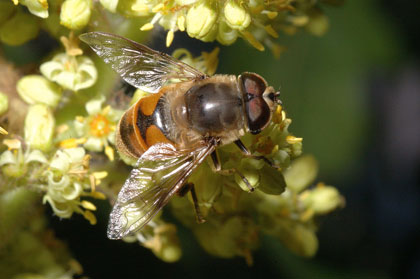

Other Managed Pollinators
Turning a wild species into a managed pollinator requires knowledge of the biology, ecology, and husbandry of the species. Efforts to develop native pollinators have intensified over concerns about pathogen movement and invasive species resulting from introduced pollinators. Several species of bumble bees and mason bees are most likely to be the next "new" commercial pollinators.
Blow flies (family Calliphoridae), including the familiar bluebottle and greenbottle flies, are suitable pollinators for some vegetable seed production operations (i.e., Natufly®, sold by Koppert). These flies work well for small-scale, breeding, and experimental work in carrot, onion and other vegetables. Unlike bees, the flies will work effectively in the small screened chambers used for this type of work.

A blowfly on a flower (photo by Tom Woodcock)
Drone flies, which are members of the genus Eristalis in the flower fly family (Syrphidae), have also shown some potential for pollination at a commercial scale, particularly in orchards and greenhouses.

An Eristalis drone fly (photo by Stephen Marshall)